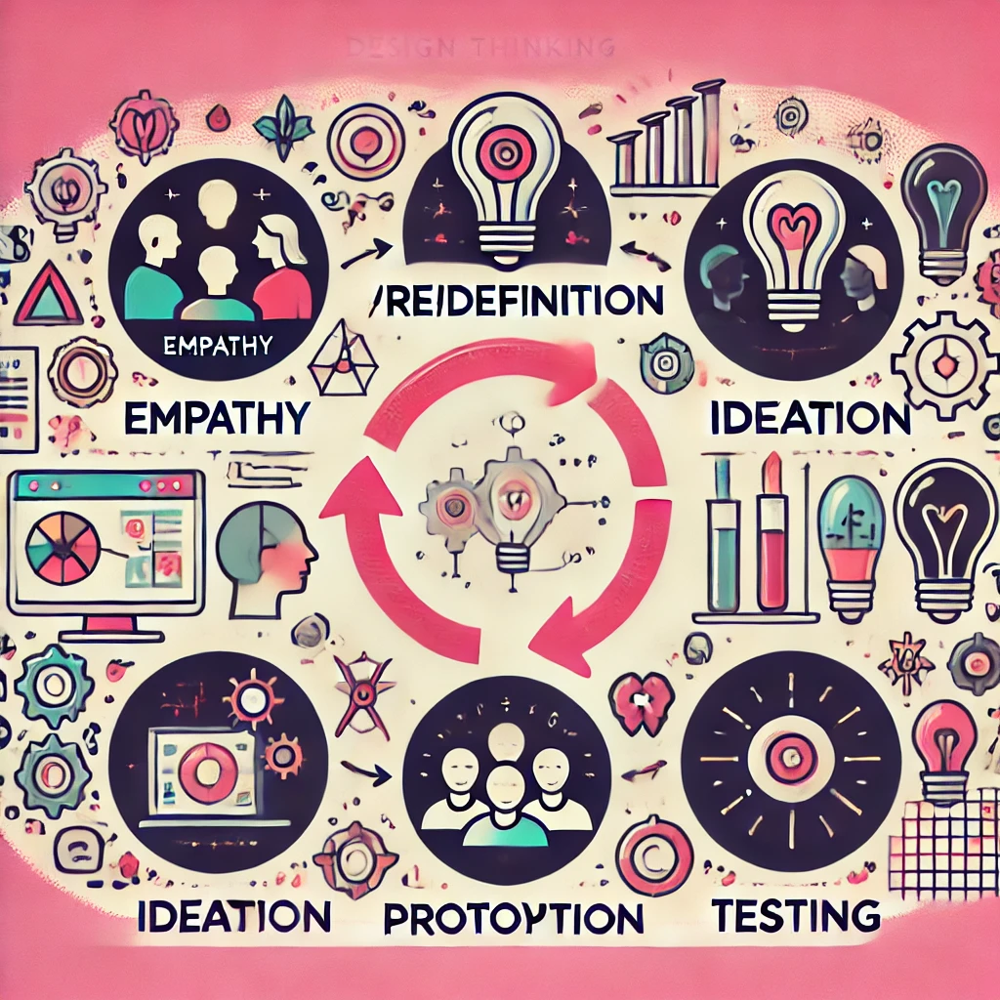

Disciplinas
INTERFACE HUMANO-COMPUTADOR-T01-2024-2 Concluído
Materiais
Vídeo 1 - [UFMS Digital] Interface Humano-computador - Módulo 2 - Unidade 1 sendProfª ministrante: Lucineide Rodrigues da Silva
Conteúdo
Processos de design de IHC
Design.
- Processo com três atividades básicas (Barbosa; Silva, 2010):
- Análise da situação atual;
- Síntese de uma intervenção;
- Avaliação da nova situação.
Análise da situação atual.
- Estudar e interpretar a situação atual:
- São geralmente analisados: pessoas, artefatos e processos;
- O foco da análise depende do domínio e dos objetivos das pessoas envolvidas, além do tempo, do orçamento e da mão-de-obra disponíveis – e até mesmo da filosofia de trabalho;
- Resolver um problema de design significa responder à pergunta: “Como melhorar a situação atual?”
- A análise aponta as necessidades e oportunidades de melhoria para as quais será projetada uma intervenção, representadas por metas de design;
- Objetivos dos usuários e critérios de qualidade.
Síntese de uma intervenção.
- Planejar e executar uma intervenção na situação atual;
- Responde à pergunta: “Como melhorar esta situação?”
- Inserir novo sistema;
- Atualizar um sistema atual;
- Mudança em processos.
- Quando a intervenção envolve o desenvolvimento de sistemas, ela deve articular os interesses dos stakeholders com:
- O conhecimento adquirido na análise da situação atual;
- O conhecimento sobre intervenções bem e mal avaliadas em casos semelhantes;
- O conhecimento sobre as possibilidades e limitações das tecnologias disponíveis.
Avaliação da nova situação.
- Verificar o efeito da intervenção, comparando a situação analisada anteriormente com a nova situação, atingida após a intervenção;
- Pode-ser avaliar:
- Durante a concepção e o desenvolvimento da intervenção;
- Antes da introdução da intervenção;
- Depois da intervenção ter sido aplicada;
- Quando a intervenção envolve um sistema, existem vários aspectos a serem avaliados: alguns relacionados com a construção do sistema, como a facilidade de manutenção e robustez, outros com o seu uso, como a usabilidade e acessibilidade.
Processos de design.
- Alguns processos de design de IHC organizam qual deve ser a primeira atividade a ser realizada, bem como a sequência de transições entre elas;
- Uma característica básica dos processos de design de IHC é a execução das atividades de forma iterativa.
- Princípios do Design Centrado no Usuário:
- Foco no usuário;
- Métricas observáveis;
- Design iterativo.
Design Thinking.
- Uma metodologia para resolver problemas através da inovação orientada pelo design centrado no ser humano (Brown, 2008);
- Utiliza a sensibilidade do designer e métodos para combinar as necessidades das pessoas com o que é tecnologicamente viável e o que uma estratégia de negócios viável pode converter em valor para o cliente e oportunidade de mercado.
🎨💡🤔
https://files.oaiusercontent.com/file-hphMiQvKGEMPiHo4LgP3bJlC?se=2024-09-23T22%3A51%3A23Z&sp=r&sv=2024-08-04&sr=b&rscc=max-age%3D604800%2C%20immutable%2C%20private&rscd=attachment%3B%20filename%3Daba502d6-8bc5-40cf-90c2-0ed114824aeb.webp&sig=BzUxyzADIViU6ltX1q3u/sSjA6mDbTZ5zSZ38/37q5c%3D
- Empatia 🤝
- (Re)definição 🔍
- Ideação 💡
- Prototipação ✏️
- Teste 🧪
- Encontrar informações sobre as pessoas no mundo real:
- Necessidades;
- Comportamentos;
- Objetivos;
- Sentimentos.
- Como?
- 5 porquês;
- Um dia na vida / Sombra.
- Avaliar as informações coletadas:
- Encontrar um problema real e suas causas;
- Formular perguntas para identificar informações complementares.
- Como?
- Matriz de definição de problema;
- Personas.
- Gerar ideias para resolver o problema:
- Criatividade;
- Colaboração com perfis diversos e pessoas afetadas pelo problema;
- Catálogo de ideias.
- Como?
- Brainstorming;
- Workshop colaborativo;
- E se…
- Validar as ideias geradas:
- Criar protótipos;
- Mostrar a utilidade e a viabilidade da proposta;
- Como?
- Storyboard;
- Maquete;
- Encenação.
- Validar as ideias geradas com as pessoas;
- Descobrir eventuais problemas para refinar a proposta.
- Como?
- Matriz de feedback;
- Mural;
- Teste conceitual.
Referências:
BARBOSA, Simone Diniz Junqueira; SILVA, Bruno Santana da. Interação Humano-Computador. Rio de Janeiro: Elsevier, 2010. Capítulo 4.
BRASIL. Design Thinking Toolkit para Governo. E-book. Disponível em: https://link.ufms.br/EvLUZ. Acesso em: 29 set. 2023.
BROWN, Tim. Design Thinking. Brighton: Harvard Business Review, 2008.
HOHEMBERGER, Diones Antonio; ROSSI, Fábio Diniz. Guia Didático do Design Thinking: uma metodologia ativa para estimular a criatividade, a inovação e o empreendedorismo em sala de aula. Jaraguari: IFFAR, 2020. E-book. Disponível em: https://link.ufms.br/crYPm. Acesso em: 29 set. 2023.
SERPRO. Design Thinking. 2017. E-book. Disponível em: https://link.ufms.br/M7z94. Acesso em: 29 set. 2023. p. 1-14.